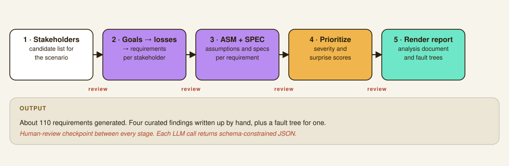

AI Risk Analysis Automation
LLM-assisted tooling that automates the stakeholder, requirements, and assumption analysis for a dashcam missing-child-search system, with a human-review checkpoint between every stage.
Overview
The assignment scenario: a company is proposing a dashcam network that can recognize missing children and notify law enforcement. The job is to work through a formal safety and privacy risk analysis of that system: who the stakeholders are, what they need from the system, how it could fail them, and what requirements would prevent that. Doing all of that by hand for a system with this many stakeholders (drivers, fleet operators, law enforcement, bystanders, company legal and compliance, and more) is slow and repetitive in a specific way that made it a good candidate for automation, with a human still making every judgment call.

The pipeline
I built a five-stage pipeline, each stage a separate script, with a human-review checkpoint between every one, I edited the JSON output by hand between stages rather than letting it run end to end unsupervised:
- Stage 1, stakeholders: generates candidate stakeholders for the scenario.
- Stage 2, goals to losses to requirements: for each stakeholder, works from their values and goals down to potential losses and the requirements that would prevent them.
- Stage 3, assumptions and specs: for each requirement, generates the ASM (assumptions about the environment the software can't enforce) and SPEC (what the system senses and emits at its boundary) that would make it verifiable.
- Stage 4, prioritization: scores everything by severity and "surprise," to filter roughly 110 requirements down to a shortlist worth close human attention.
- Stage 5, report rendering: renders the staged JSON into a readable analysis document.
Every LLM call goes through a shared Azure OpenAI client using the Responses API's JSON-schema mode, so every stage's output is schema-constrained structured JSON rather than free text I'd have to parse defensively. A separate script builds the fault-tree diagrams with Graphviz for the two findings I took to that level of depth.
Curated findings
Out of the roughly 110 generated requirements, I picked four to write up in depth, chosen to fail for different reasons rather than being four versions of the same problem:
- Disabling the feature is not one control point. The scenario gives dashcams three separate ways data can leave the device (paired phone, WiFi hotspot, edge node), so a "disable" toggle that only gates the main app path silently leaves the other two as bypasses. The same pattern showed up for two other stakeholders' opt-out requirements, which is what convinced me it was structural rather than one-off.
- Rare searches starve the calibration data confidence scores need. The scenario mentions roughly one Amber Alert a day nationwide, meaning any local area sees searches rarely enough that "we'll calibrate confidence off production feedback" quietly fails: there may never be enough verified outcomes in a given lighting and distance condition to catch drift before it causes harm.
- A single machine match can trigger a real police stop of an innocent bystander. This is the requirement most directly downstream of the AI component being wrong. The fix isn't tuning precision higher, it's architectural: a raw model output should never become an identity claim handed to police without an independent, human, in-agency confirmation, and the system has to fail closed when that confirmation can't be verified.
- Edge partnerships quietly turn "search this footage" into "watch continuously." The scenario frames edge computing as an opportunity the company is still just considering, which is exactly why nobody has written the rules yet that would stop an authorized search from becoming de facto continuous surveillance at a partner site.
Why this design
The choice to keep a human-review checkpoint between every stage, instead of letting the whole pipeline run unattended, was deliberate. LLM output at this kind of analysis is useful as raw material, plausible stakeholders, plausible failure modes, but the actual judgment of which findings matter and why has to be mine. The pipeline's job is to widen the space of things considered so I'm not starting from a blank page, not to make the final call on what's a real risk.